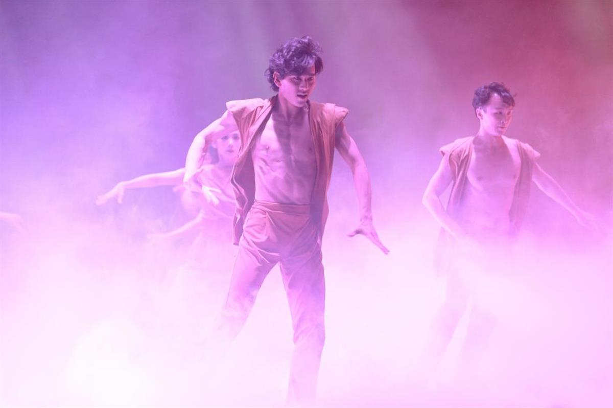
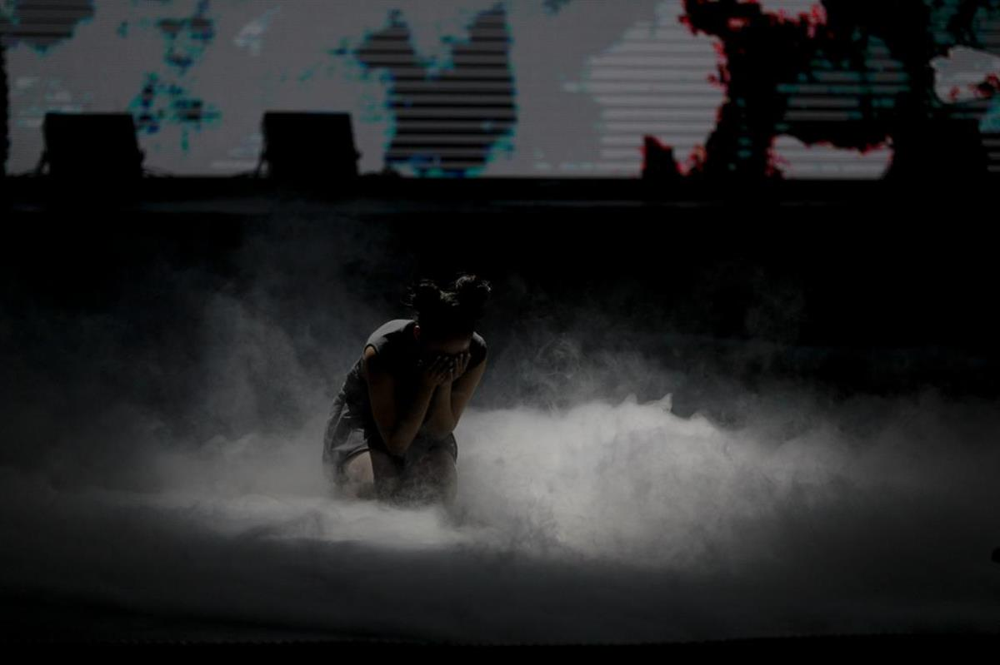
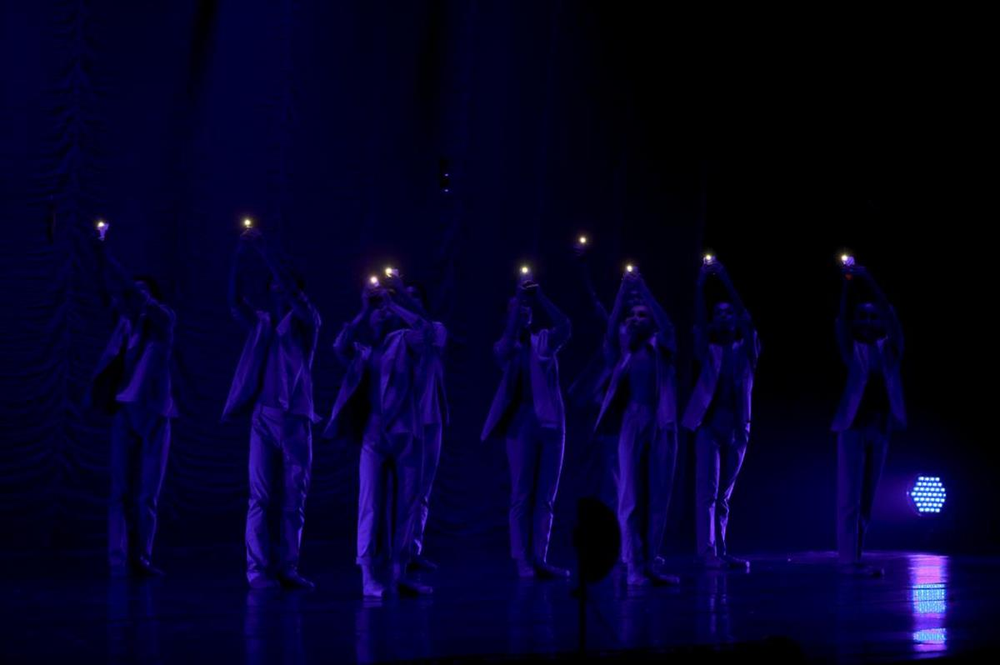

Emmanuelle Svartz @ Ambling Light Photography
Swan Lake? Romeo and Juliet? Think again! Discover how modern ballet can tell the story of the devastating impact of air pollution on children, and trigger action.
By Ariunzaya Davaa
19 July 2019
ULAANBAATAR, Mongolia – A familiar issue presented in a not-so-familiar way. A little girl walking home from school. A violent cough makes her whole body shake.
All she dreams of is clean air.
This could be a common scene in Ulaanbaatar, one of the most polluted capitals in the world and home to half of Mongolia’s three million population. However, this is the opening scene of Life Element – O2, a modern ballet production created and staged by the Mongolian Ballet Program to call for action against air pollution in Mongolia.
Graceful ballet moves meet face masks to raise awareness about the urgent issue of air pollution and its impact on children’s health.

UNICEF Mongolia/2019/Batgerel
Dancers during Life Element – O2, a modern ballet production staged in Ulaanbaatar, Mongolia, to call for action against air pollution
A modern ballet that moves
Combining old and new, this production takes an innovative approach to fighting toxic air. Graceful ballet moves meet face masks to raise awareness about the urgent issue of air pollution and its impact on children’s health.
Supported by UNICEF and the Swiss Agency for Development and Cooperation, Life Element – O2 taps into the timeless art of ballet to highlight environmental issues.
“It is definitely a new way to raise awareness on air pollution also among young people, building upon the enormous talent of the dancers and producer,” said Gabriella Sprili, Director of the Swiss agency.
UNICEF Mongolia/2019/Batgerel
Two dancers perform a pas de deux during Life Element – O2, a modern ballet production staged in Ulaanbaatar, Mongolia, to call for action against air pollution.
How air pollution harms children
Recent data published by Mongolia’s National Statistics Office show that the residents of Ulaanbaatar –where air pollution levels are among the highest in the world in winter when pollution is strongest – were breathing in polluted air for 339 days last year.
“I was so touched… I really had to fight to hold back my tears.” — Ariunzaya Ayush, Director of the National Statistics Office in Mongolia.
The biggest source of air pollution comes from coal-burning stoves in Ger districts, which make up 60 per cent of Ulaanbaatar’s population. A Ger is a traditional Mongolian home, which consists for the most part of felt covers and wooden columns, and can be easily assembled and disassembled to suit traditional nomadic life.
Children in a highly polluted district of the city have been found to have weaker lungs than children in rural areas ─ with as much as 40 per cent poorer lung function.
With adverse health effects including stillbirth, pneumonia, bronchitis and asthma, air pollution has become a maternal and child health crisis in Mongolia.

UNICEF Mongolia/2019/BatgerelA dancer performs in Life Element – O2, a modern ballet production staged in Ulaanbaatar, Mongolia, to call for action against air pollution.
Taking action to protect children
UNICEF has been actively working with the Government of Mongolia and other partners to reduce air pollution in the country, as well as protect the health of children and pregnant women from its impact.
Action has focused on gathering evidence and raising awareness on the health impact of air pollution; providing practical information to parents on protecting children from toxic air and switching to cleaner energy; and increasing coverage of pneumonia vaccines.
“[The performance] was truly powerful. Without a single word, the show managed to bring the message across of how incredibly big the issue of air pollution is, and how it affects us all,” said Alex Heikens, UNICEF Representative to Mongolia. “The performance reminds us once again of the urgency to move to solutions that are going to deliver on that big dream we have for our children – clean air.”

UNICEF Mongolia/2019/Batgerel
Dancers raise their phones as torch lights during Life Element – O2, a modern ballet production staged in Ulaanbaatar, Mongolia, to call for action against air pollution.
Just a dream?
As the performance comes to an end, the little girl and her friends celebrate on stage. After joining forces to stop air pollution, the air is now clean.
Is this the happy ending everyone was waiting for?
Possibly. But just before the curtains close, the girl wakes up. And she realizes that the happy ending was just a dream.
As the theatre fills with loud clapping, the dancers come to the front of the stage and a message appears on the screen behind them: “Let us make this dream a reality for every child.”
After its first show in May, the ballet is scheduled to be staged again later this year, to coincide with a regional conference on air pollution and child health in East Asia.
SOURCE: UNICEF